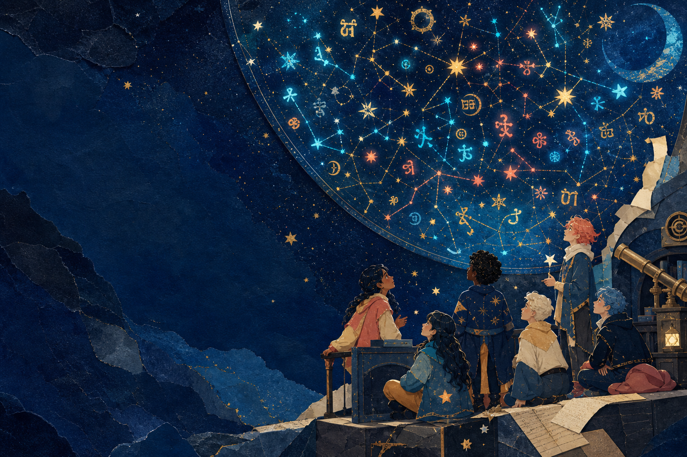
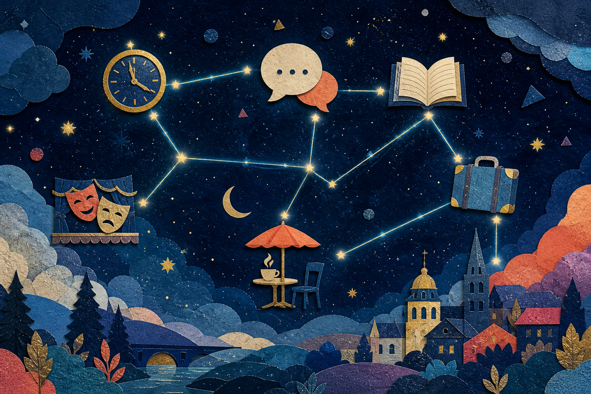
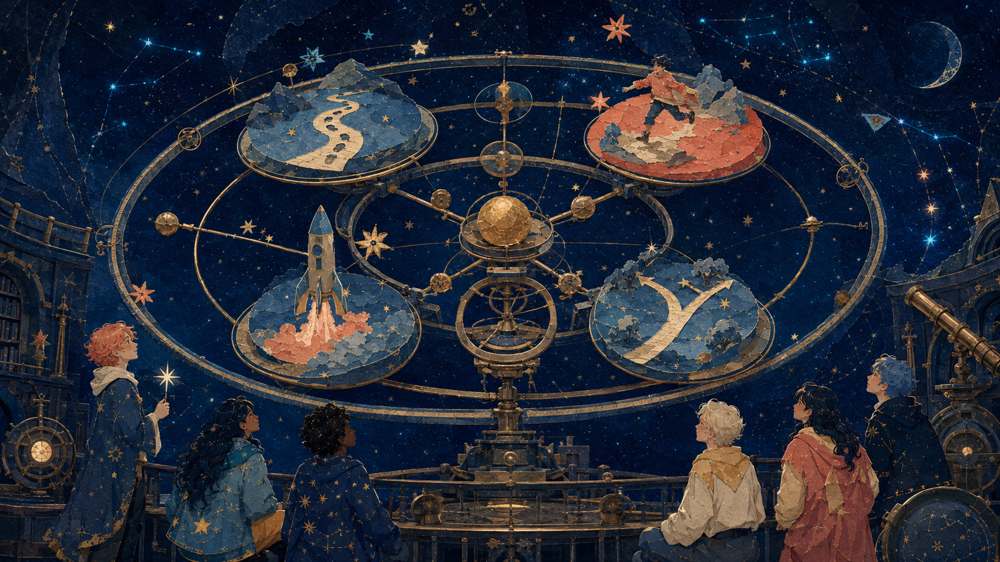
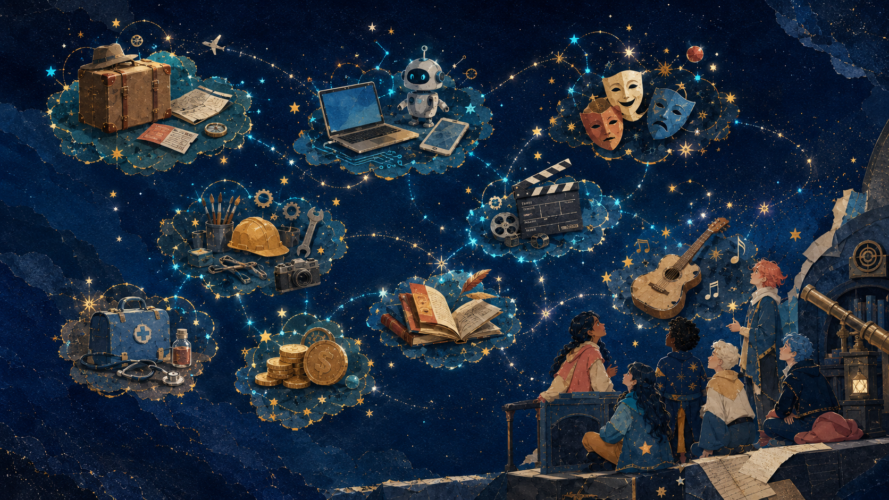
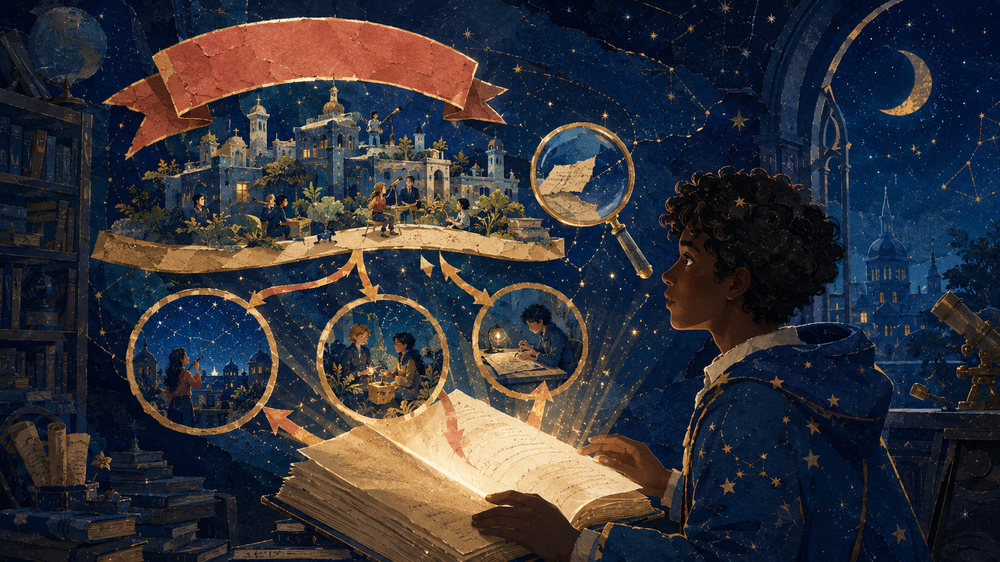
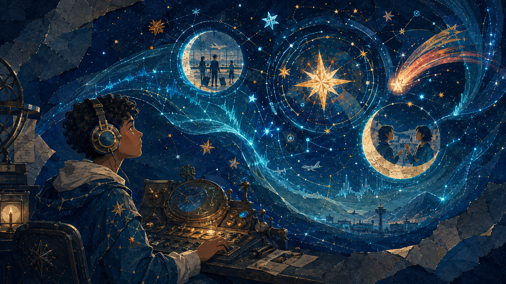
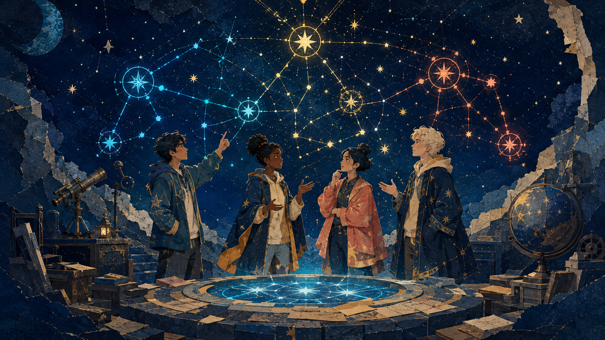
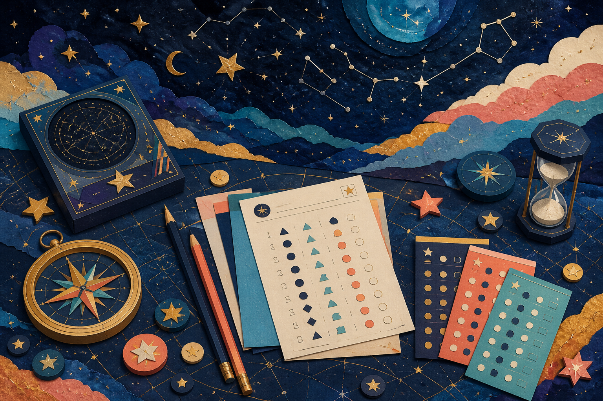
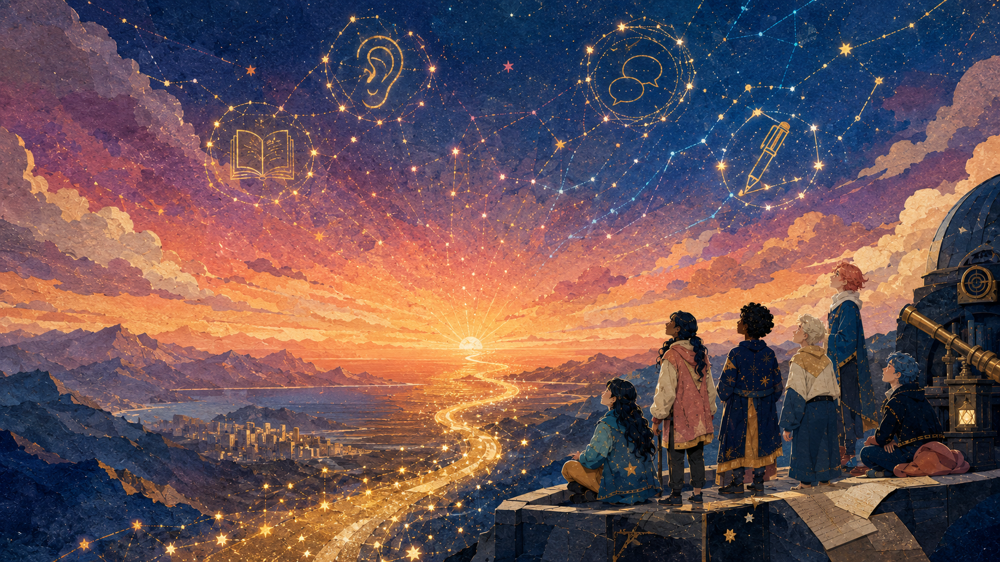

Researchers designed the robot.

Lesson 30 · final revision + level test
Language
Observatory
Thirty lessons became one sky. Tonight, you prove what you can do—and choose where to travel next.
Mission 01 · your destination
This is not a memory test.
It is a skill scan.
You will notice patterns, make choices, explain your thinking, and leave with one realistic next step.
- 01ReconnectRecover the course map
- 02RecalibrateRepair language systems
- 03TransmitRead, listen and speak
- 04NavigateTest and plan forward
Mission 02 · confidence scan
Choose your signal before the test.
There is no “right” confidence level. Pick the statement that feels honest now.
Your starting signal is waiting.

Mission 03 · course constellation
Thirty lessons.
Four galaxies.
Tenses, conditionals, passive voice, reported speech, relative clauses and question tags.
Personality, emotions, travel, careers, business, hobbies, media and phrasal verbs.
Reading for evidence, listening for meaning, pronunciation, fluency and problem-solving.
Opinions, stories, reviews, debates, presentations and real-life conversations.
Mission 04 · memory meteor shower
Catch a topic.
Say one thing you remember.
Partner rule: add an example or ask one follow-up question.

Mission 05 · grammar orrery
Grammar is a map of meaning.
Find the footprints, the action, the rocket and the forked path. What time or possibility does each world suggest?
Mission 06 · present lens
Habit, happening now,
or unfinished journey?
usuallyright nowsince Monday
Mira usually ___ by bus, but this week she ___ from home.
Signal: “usually” = habit; “this week” = temporary situation.
When the lights went out, we ___ dinner. Earlier, Dad ___ the candles.
Picture it: long action interrupted; earlier action completed first.
Mission 07 · past lens
Three past times.
One clear story.
had boughtwere eatinglights went out
Mission 08 · future radar
The future changes shape
when the intention changes.
Tap a radar ring to reveal its purpose.
Mission 09 · perfect systems
Result or duration?
Both connect the past to now. The speaker chooses what matters.
NOW
Choose a sentence, then explain what the speaker wants us to notice.
Mission 10 · conditional gate
Real possibility
or imagined world?
Create one true possibility and one imaginative answer.
Mission 11 · spotlight controls
Move attention
without losing meaning.
?
Use passive voice when the result or receiver matters more than the doer.
Mission 12 · message relay
Report the idea,
not the exact sound.
“I am finishing the project now,” Lila said.
Look for the pronoun, tense and time-word shift.
Mission 13 · verb docking bay
Some verbs dock with -ing.
Others dock with to.
Tap each capsule and send it to the correct station.
VERB + -ING
VERB + TO
Mission 14 · error scanner
Find four glitches.
Repair the transmission.
Tap the glowing fragments. Say the correction before the scanner reveals it.
0 / 4 glitches repaired

Mission 15 · vocabulary nebula
Words are easier to find
when they live in families.
Choose one cluster. Name five words, one collocation and one personal example.
Mission 16 · cluster sorter
Which galaxy owns the word?
Score 0/8
reliable
Choose a galaxy. A new word will appear automatically.
Mission 17 · collocation magnets
Strong words attract
the right partners.
Choose a verb, then click the noun it naturally attracts.
Build four natural pairs.
Mission 18 · phrasal verb airlock
One small particle
changes the mission.
look
Choose a particle to unlock the meaning.
Create a true sentence with the unlocked phrasal verb.

Mission 19 · reading archive
Read like an astronomer.
1 · scan the sky2 · locate evidence3 · infer the pattern
ARCHIVE 30-A
Small roofs, big change
Five years ago, the roofs of several apartment buildings in Aral City were empty and extremely hot in summer. Today, residents grow herbs and vegetables there. The gardens do more than provide food: they cool the buildings, create spaces where neighbours meet, and give insects a place to live. The project began with one science teacher and twelve students. After local businesses donated soil and tools, other buildings copied the idea. The gardens cannot solve every environmental problem, but they show how one practical experiment can influence a whole neighbourhood.
Mission 21 · evidence lens
A good answer points
back to the text.
Choose a question, then reveal the strongest evidence.
Select a lens.

Mission 22 · listening signal room
Do not chase every word.
Track three signals: the main message, supporting details, and the moment the speaker changes direction.
Mission 23 · incoming transmission
Listen twice.
Build the message.
Uses your browser’s system voice. The transcript is always available.
Attention passengers travelling to Osh. Flight KG 214 will not leave from Gate 6 as planned. Because of a technical check, boarding will begin twenty minutes later at Gate 9. Passengers with small children may board first. We apologise for the change.
Choose a question after listening.
Mission 24 · pronunciation wave
Stress carries meaning.
Tap a sentence to move the spotlight. Read it aloud with the highlighted word strongest.
.
Choose the strongest word. What contrast does it create?

Mission 25 · speaking launch deck
A strong answer creates
a path for the listener.
positionreasonexamplefollow-up
Mission 26 · one-minute orbit
Spin. Think. Speak.
Pass the question.
Your prompt will land here.
I think…because…for example…What about you?
60

Mission 27 · level-test kit
Accuracy + meaning
+ strategy.
Fifteen mixed questions. One answer each. You can change an answer before submitting.
Mission 28 · final level test
Navigate all fifteen signals.
Loading test…
Mission 29 · results constellation
Your score is evidence.
It is not your identity.
Combine your score with speaking, listening and real-life performance.
—/ 15
Complete the test to map your result.
Your constellation will appear here.
A2 bridgeStrong A2B1 orbit
Mission 30 · next-orbit planner
Make progress small enough
to repeat.
Build one seven-day mission. Your plan is saved on this device.

Final transmission
You do not need
the whole sky.
Choose one direction. Follow it often. Let small signals become a path.
Next, I will
Your next constellation begins with one action.